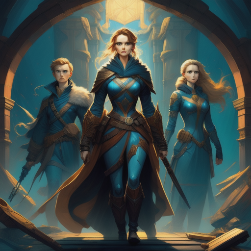

Sara, Jack, and Sophie chose to safeguard the artifacts and seek a way to neutralize their power. They couldn't risk the artifacts falling into the wrong hands or causing unintended harm.
With the help of experts and scholars, they embarked on a quest to understand the ancient artifacts better
It was a challenging journey, filled with puzzles and mysteries, but their determination never wavered.
Eventually, they discovered a way to safely neutralize the artifacts' power, ensuring they could never be misused again.
The artifacts, now rendered harmless, became a symbol of their commitment to protecting the world from the dangers of unchecked power.
Their story served as a reminder that friendship, even in the face of extraordinary challenges, could conquer all
The Reconnection
Continue to protect the artifacts and confront the rival faction.
Reflect on the Enduring Impact of Their Friendship.